The Challenge
Refined and systemised the label structure to improve hierarchy, scalability and production consistency, while preserving Samaroli’s heritage aesthetic.
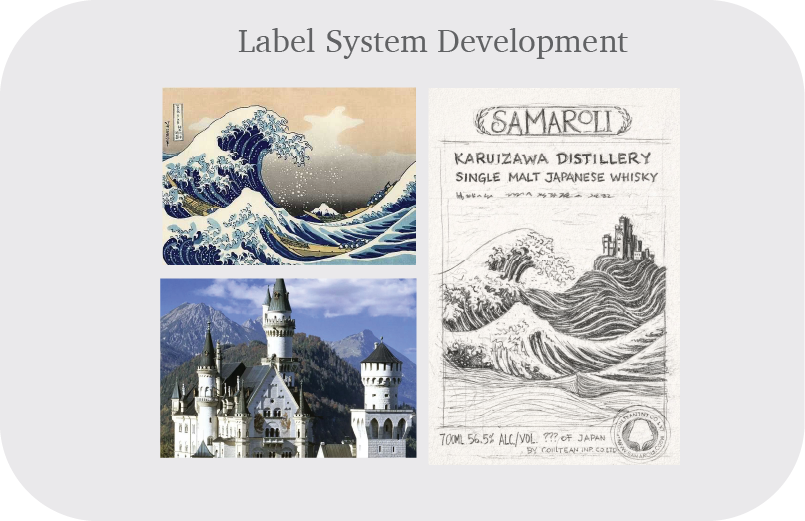
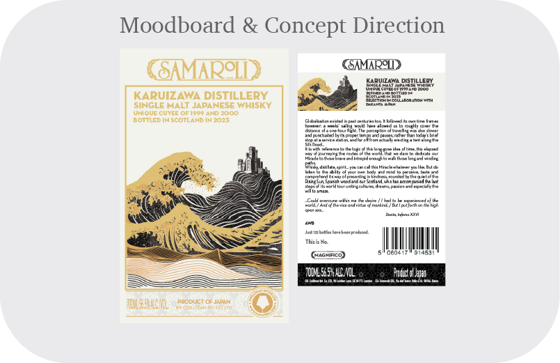
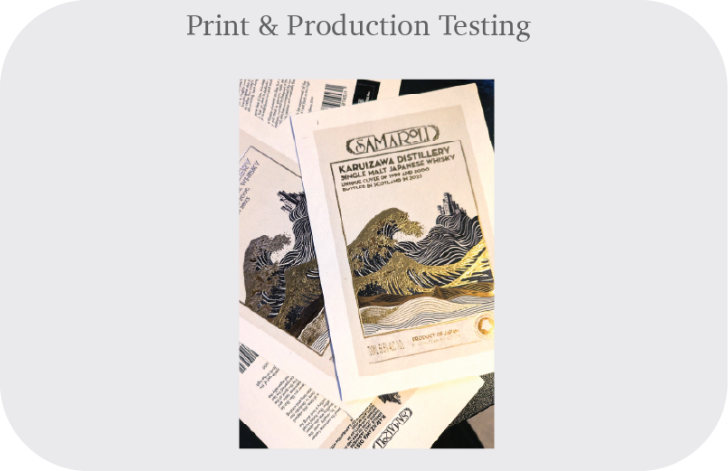
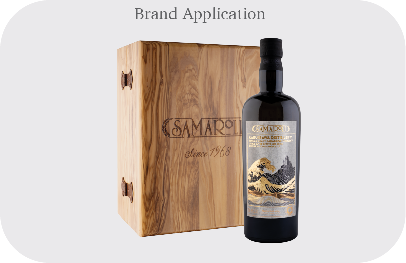
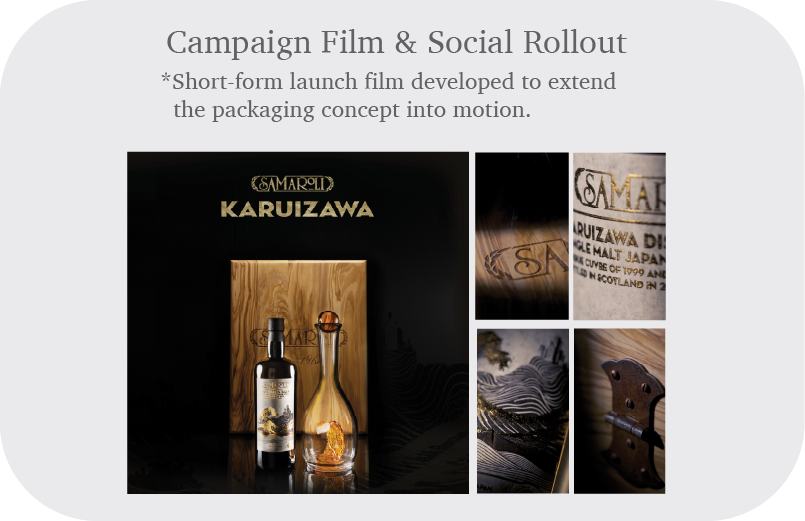
My Role
I was responsible for the development of Samaroli’s label system, supporting visual hierarchy, typography consistency, production detail, editorial assets and campaign-led brand applications across different editions.
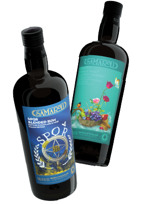
Label System Development
Label System Development
A consistent visual system was created to support premium limited editions while allowing each bottling to retain individual narrative cues. This included hierarchy setting, typography handling, ornamental references and production alignment.
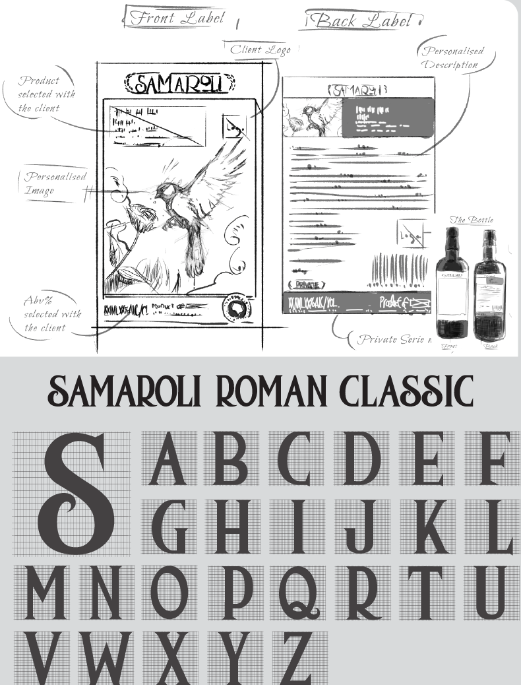
Production & Material Strategy
Print structure, substrate behaviour and finishing logic were reviewed to ensure the label system translated effectively across bottles, supporting assets and different release formats.
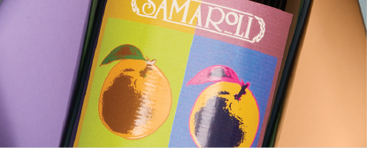
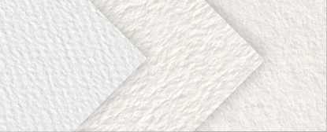
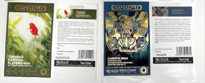
Digital & Campaign Rollout
The packaging system extended into web visuals, launch assets and digital presentation materials, helping the brand remain visually coherent beyond the bottle itself.
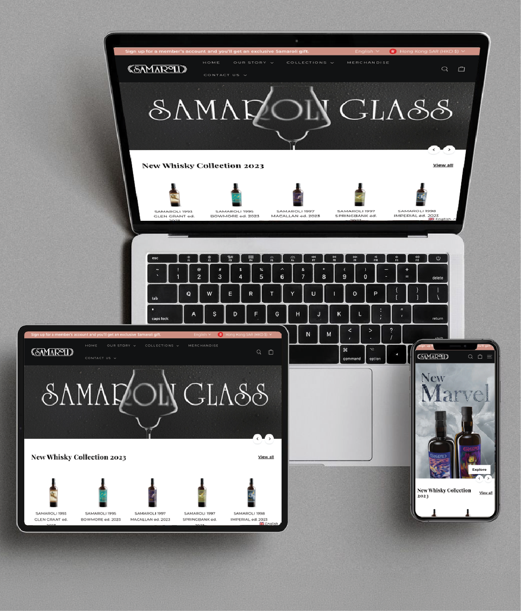
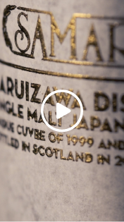
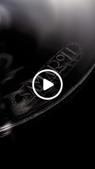
Editorial & Retail Application
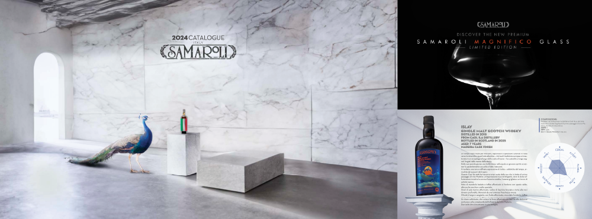
Additional visual outputs were adapted across editorial pages, retail communication and display-led formats, strengthening the premium identity across multiple touchpoints.
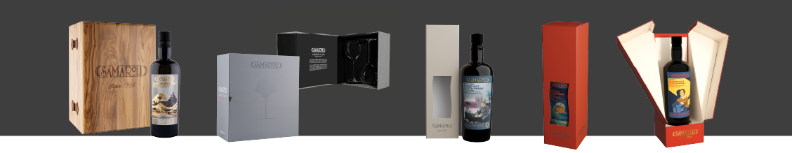
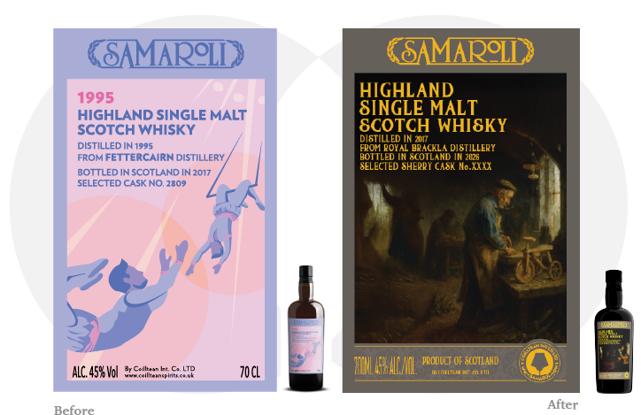